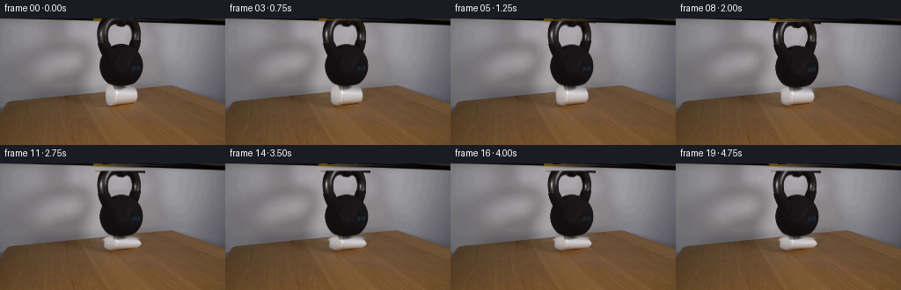
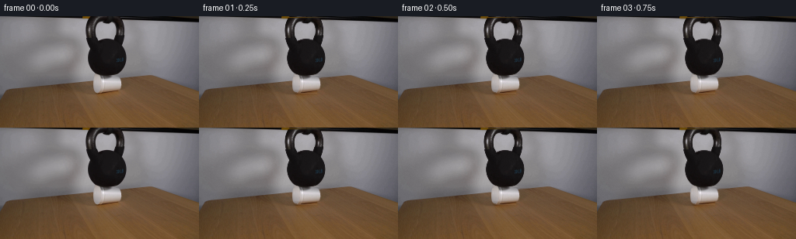

CODING AGENTS AS PIXEL WORLD MODELS
traex/DeepSeek-V4.1-Flash · 0190
点击播放 · 原生 RGB 像素
逐轮保存的候选
回放视频、检查图与代码变化。
每份候选均可单独播放。实际图片检查记录在下方工具轨迹中。
候选 01播放与检查图
点击播放 · 原生 RGB 像素


展开代码变化
--- 上一保存版本
+++ 本次保存版本
@@ -0,0 +1,306 @@
+from pathlib import Path
+
+import numpy as np
+from PIL import Image
+from scipy.ndimage import (
+ distance_transform_edt,
+ gaussian_filter,
+ map_coordinates,
+ shift,
+)
+
+import artifact_io
+
+
+ROOT = Path(__file__).resolve().parent
+WIDTH = 256
+HEIGHT = 144
+FRAME_COUNT = 20
+FPS = 4
+
+
+def smoothstep(edge0, edge1, value):
+ x = np.clip((value - edge0) / (edge1 - edge0), 0.0, 1.0)
+ return x * x * (3.0 - 2.0 * x)
+
+
+def interpolate_keys(keys, value):
+ times = np.array([key[0] for key in keys], dtype=np.float64)
+ values = np.array([key[1] for key in keys], dtype=np.float64)
+ if value <= times[0]:
+ return float(values[0])
+ if value >= times[-1]:
+ return float(values[-1])
+ index = int(np.searchsorted(times, value, side="right") - 1)
+ fraction = (value - times[index]) / (times[index + 1] - times[index])
+ fraction = fraction * fraction * (3.0 - 2.0 * fraction)
+ return float(values[index] * (1.0 - fraction) + values[index + 1] * fraction)
+
+
+def row_polygon_mask(row_bounds):
+ yy, xx = np.mgrid[:HEIGHT, :WIDTH]
+ mask = np.zeros((HEIGHT, WIDTH), dtype=np.float32)
+ for y, x0, x1 in row_bounds:
+ mask[y, max(0, x0) : min(WIDTH, x1 + 1)] = 1.0
+ mask = gaussian_filter(mask, sigma=0.55)
+ return np.clip(mask * 1.12, 0.0, 1.0)
+
+
+def make_cup_mask():
+ bounds = [
+ (77, 123, 153),
+ (78, 121, 155),
+ (79, 120, 156),
+ (80, 119, 157),
+ (81, 119, 158),
+ (82, 119, 158),
+ (83, 119, 158),
+ (84, 119, 158),
+ (85, 119, 158),
+ (86, 119, 158),
+ (87, 119, 158),
+ (88, 119, 158),
+ (89, 119, 158),
+ (90, 119, 158),
+ (91, 119, 158),
+ (92, 119, 158),
+ (93, 119, 158),
+ (94, 119, 157),
+ (95, 120, 157),
+ (96, 121, 156),
+ (97, 123, 154),
+ (98, 126, 151),
+ ]
+ return row_polygon_mask(bounds)
+
+
+def make_kettlebell_mask(image):
+ yy, xx = np.mgrid[:HEIGHT, :WIDTH]
+ gray = image.mean(axis=2)
+ region = (
+ (xx >= 108)
+ & (xx <= 164)
+ & (yy >= 2)
+ & (yy <= 79)
+ )
+ darkness = np.clip((122.0 - gray) / 62.0, 0.0, 1.0)
+ mask = darkness * region.astype(np.float32)
+ mask = gaussian_filter(mask, sigma=0.45)
+ return np.clip(mask * 1.10, 0.0, 1.0)
+
+
+def inpaint_rows(image, mask):
+ result = image.copy()
+ hard = mask > 0.025
+ for y in range(HEIGHT):
+ row_mask = hard[y]
+ if not row_mask.any():
+ continue
+ starts = np.flatnonzero(row_mask & ~np.r_[False, row_mask[:-1]])
+ ends = np.flatnonzero(row_mask & ~np.r_[row_mask[1:], False])
+ for start, end in zip(starts, ends):
+ left = start - 1
+ right = end + 1
+ if left >= 0 and right < WIDTH:
+ span = right - left
+ for x in range(start, end + 1):
+ weight = (x - left) / span
+ result[y, x] = (
+ image[y, left] * (1.0 - weight)
+ + image[y, right] * weight
+ )
+ elif left >= 0:
+ result[y, start : end + 1] = image[y, left]
+ elif right < WIDTH:
+ result[y, start : end + 1] = image[y, right]
+ return result
+
+
+def make_background(image, cup_alpha, kettle_alpha):
+ removal = np.clip(cup_alpha + kettle_alpha, 0.0, 1.0)
+ removal[74:102, 114:162] = np.maximum(
+ removal[74:102, 114:162], cup_alpha[74:102, 114:162] > 0.03
+ )
+ removal = gaussian_filter(removal.astype(np.float32), sigma=0.35) > 0.02
+ background = inpaint_rows(image, removal.astype(np.float32))
+
+ # Very slight smoothing suppresses interpolation streaks without erasing table grain.
+ blurred = np.stack(
+ [gaussian_filter(background[:, :, channel], sigma=0.35) for channel in range(3)],
+ axis=2,
+ )
+ return background * 0.72 + blurred * 0.28
+
+
+def sample_layer(layer_rgb, alpha, x, y):
+ sampled_alpha = map_coordinates(
+ alpha, [y, x], order=1, mode="constant", cval=0.0, prefilter=False
+ )
+ sampled_rgb = np.empty((HEIGHT, WIDTH, 3), dtype=np.float32)
+ for channel in range(3):
+ sampled_rgb[:, :, channel] = map_coordinates(
+ layer_rgb[:, :, channel],
+ [y, x],
+ order=1,
+ mode="constant",
+ cval=0.0,
+ prefilter=False,
+ )
+ return sampled_rgb, np.clip(sampled_alpha, 0.0, 1.0)
+
+
+def render_cup(background, image, cup_alpha, compression):
+ base_source = 97.0
+ top_source = 77.0
+ height_source = base_source - top_source
+ vertical_scale = 1.0 - 0.36 * compression
+ height_output = height_source * vertical_scale
+ top_output = base_source - height_output
+
+ yy, xx = np.mgrid[:HEIGHT, :WIDTH].astype(np.float32)
+ v = np.clip((base_source - yy) / height_output, 0.0, 1.0)
+ width_scale = 1.0 + compression * (0.10 + 0.085 * np.sin(np.pi * v))
+ lean = compression * (0.55 + 0.35 * np.sin(np.pi * v))
+ crease = compression * 0.52 * np.sin(
+ 2.0 * np.pi * (1.55 * v + 0.07 * (xx - 137.0) / 20.0)
+ )
+
+ source_x = 137.0 + (xx - 137.0 - lean) / width_scale + crease
+ source_y = base_source - (base_source - yy) / vertical_scale
+ source_y -= compression * 0.20 * np.sin(np.pi * v)
+
+ valid = (
+ (yy >= top_output - 1.0)
+ & (yy <= base_source + 1.0)
+ & (source_y >= top_source - 2.0)
+ & (source_y <= base_source + 2.0)
+ )
+
+ premultiplied = image * cup_alpha[:, :, None]
+ cup_rgb, cup_mask = sample_layer(premultiplied, cup_alpha, source_x, source_y)
+ cup_mask *= valid.astype(np.float32)
+
+ # The compressed foam bulges and creases rather than simply scaling.
+ shade = np.ones((HEIGHT, WIDTH), dtype=np.float32)
+ shade -= compression * 0.065 * np.exp(
+ -0.5 * ((v - 0.31) / 0.085) ** 2
+ )
+ shade -= compression * 0.045 * np.exp(
+ -0.5 * ((v - 0.63) / 0.065) ** 2
+ )
+ side = np.clip((xx - 137.0) / 19.0, -1.0, 1.0)
+ shade += compression * 0.035 * side
+ shade += compression * 0.025 * np.exp(-0.5 * ((side + 0.72) / 0.13) ** 2)
+ cup_rgb *= shade[:, :, None]
+
+ output = background * (1.0 - cup_mask[:, :, None]) + cup_rgb
+ return output, cup_mask
+
+
+def add_table_shadow(image, compression):
+ yy, xx = np.mgrid[:HEIGHT, :WIDTH].astype(np.float32)
+ rx = 20.5 + compression * 2.2
+ ry = 3.2 + compression * 0.9
+ shadow = np.exp(
+ -0.5
+ * (
+ ((xx - 137.0) / rx) ** 2
+ + ((yy - (98.3 + compression * 0.7)) / ry) ** 2
+ )
+ )
+ shadow *= (0.22 + 0.08 * compression) * (yy >= 95.0)
+ shadow = gaussian_filter(shadow, sigma=0.65)
+ tint = np.array([0.48, 0.35, 0.25], dtype=np.float32)
+ return image * (1.0 - shadow[:, :, None] * (1.0 - tint))
+
+
+def render_kettlebell(image, kettle_rgb, kettle_alpha, dy):
+ shifted_rgb = np.empty_like(kettle_rgb)
+ for channel in range(3):
+ shifted_rgb[:, :, channel] = shift(
+ kettle_rgb[:, :, channel],
+ shift=(dy, 0.0),
+ order=1,
+ mode="constant",
+ cval=0.0,
+ prefilter=False,
+ )
+ shifted_alpha = shift(
+ kettle_alpha,
+ shift=(dy, 0.0),
+ order=1,
+ mode="constant",
+ cval=0.0,
+ prefilter=False,
+ )
+ shifted_alpha = np.clip(shifted_alpha, 0.0, 1.0)
+ return image * (1.0 - shifted_alpha[:, :, None]) + shifted_rgb
+
+
+def generate_frames():
+ source = np.asarray(Image.open(ROOT / "first_frame.png").convert("RGB"), dtype=np.float32)
+ cup_alpha = make_cup_mask()
+ kettle_alpha = make_kettlebell_mask(source)
+ background = make_background(source, cup_alpha, kettle_alpha)
+ kettle_rgb = source * kettle_alpha[:, :, None]
+
+ compression_keys = [
+ (0.00, 0.000),
+ (0.50, 0.018),
+ (1.00, 0.055),
+ (1.50, 0.120),
+ (1.90, 0.205),
+ (2.15, 0.315),
+ (2.55, 0.805),
+ (2.85, 0.900),
+ (3.15, 0.830),
+ (3.55, 0.875),
+ (4.75, 0.895),
+ ]
+
+ frames = []
+ for index in range(FRAME_COUNT):
+ if index == 0:
+ frames.append(source.astype(np.uint8).copy())
+ continue
+
+ time = index / FPS
+ compression = interpolate_keys(compression_keys, time)
+ compression += 0.010 * np.sin(2.0 * np.pi * 1.15 * time)
+ compression = float(np.clip(compression, 0.0, 0.93))
+
+ frame, _ = render_cup(background, source, cup_alpha, compression)
+ frame = add_table_shadow(frame, compression)
+
+ drop = 20.0 * 0.36 * compression
+ settle = 0.0
+ if time >= 2.55:
+ settle = (
+ 0.22
+ * np.exp(-1.35 * (time - 2.55))
+ * np.sin(2.0 * np.pi * 2.15 * (time - 2.55))
+ )
+ frame = render_kettlebell(frame, kettle_rgb, kettle_alpha, drop + settle)
+
+ # Subtle sensor texture keeps the local bilinear warps from looking synthetic.
+ rng = np.random.default_rng(1900 + index)
+ grain = rng.normal(0.0, 0.48, (HEIGHT, WIDTH, 1)).astype(np.float32)
+ frame = np.clip(frame + grain, 0.0, 255.0)
+ frames.append(np.round(frame).astype(np.uint8))
+
+ frames[0] = source.astype(np.uint8)
+ return np.stack(frames, axis=0)
+
+
+def main():
+ frames = generate_frames()
+ assert frames.shape == (20, 144, 256, 3)
+ assert frames.dtype == np.uint8
+ assert np.array_equal(
+ frames[0], np.asarray(Image.open(ROOT / "first_frame.png").convert("RGB"))
+ )
+ artifact_io.save(frames, ROOT)
+
+
+if __name__ == "__main__":
+ main()
可观测工具轨迹
实际执行的命令与返回图片。
命令 1exit 0
/bin/bash -lc "pwd && rg --files -g '"'!*.pyc'"' -g '"'!__pycache__'"' | sort"
命令 2exit 0
/bin/bash -lc "printf '%s\\n' '--- prompt.txt ---'; sed -n '1,240p' prompt.txt; printf '%s\\n' '--- GENERATION_RULES.md ---'; sed -n '1,320p' GENERATION_RULES.md"
命令 3exit 0
/bin/bash -lc 'file first_frame.png 2>/dev/null || true; identify first_frame.png 2>/dev/null || true; git status --short 2>/dev/null || true'
命令 4exit 0
/bin/bash -lc "sed -n '1,260p' artifact_io.py"
命令 5exit 0
/bin/bash -lc "sed -n '1,260p' player_template.html"
命令 6exit 0
/bin/bash -lc "python - <<'PY'
from PIL import Image
import numpy as np
im=Image.open('first_frame.png').convert('RGB')
a=np.asarray(im)
print('mode,size', im.mode, im.size, 'shape', a.shape, 'dtype',a.dtype)
print('min,max,mean,std',a.min((0,1)),a.max((0,1)),a.mean((0,1)),a.std((0,1)))
# common quantized colors
q=(a//16)*16
u,c=np.unique(q.reshape(-1,3),axis=0,return_counts=True)
for i in np.argsort(c)[-30:][::-1]: print(tuple(u[i]),int(c[i]))
PY"命令 7exit 0
/bin/bash -lc "python - <<'PY'
from PIL import Image
import numpy as np
a=np.asarray(Image.open('first_frame.png').convert('RGB')).astype(float)
# downsample 2x2
b=a.reshape(72,2,128,2,3).mean((1,3))
y=.2126*b[:,:,0]+.7152*b[:,:,1]+.0722*b[:,:,2]
chars=' .,:;irsXA253hMHGS#9B&@'
for row in y:
print(''.join(chars[min(len(chars)-1,int(v/256*len(chars)))] for v in row))
PY"命令 8exit 1
/bin/bash -lc "python - <<'PY'
from PIL import Image
import numpy as np
from scipy import ndimage
im=np.asarray(Image.open('first_frame.png').convert('RGB')).astype(float)
g=im.mean(2)
gx=np.abs(np.diff(g,axis=1)); gy=np.abs(np.diff(g,axis=0))
print('edge peaks cols',[(i,round(v,1)) for i,v in sorted(enumerate(gx.mean(0)),key=lambda x:x[1],reverse=True)[:20]])
print('edge peaks rows',[(i,round(v,1)) for i,v in sorted(enumerate(gy.mean(1)),key=lambda x:x[1],reverse=True)[:20]])
# bright object blobs threshold and components
for th in [140,160,180,200,220]:
m=g>th
lab,n=ndimage.label(m)
sizes=ndimage.sum(m,lab,range(1,n+1))
comps=[]
for k in np.argsort(sizes)[-10:][::-1]:
if sizes[k]<10:continue
ys,xs=np.where(lab==k+1)
comps.append((int(sizes[k]),(int(xs.min()),int(ys.min()),int(xs.max()),int(ys.max())))
print('th',th,comps)
# center crop palette per 8x8 region statistics rows
PY"命令 9exit 0
/bin/bash -lc "python - <<'PY'
from PIL import Image
import numpy as np
from scipy import ndimage
im=np.asarray(Image.open('first_frame.png').convert('RGB')).astype(float)
g=im.mean(2)
gx=np.abs(np.diff(g,axis=1)); gy=np.abs(np.diff(g,axis=0))
print('edge peaks cols',[(i,round(v,1)) for i,v in sorted(enumerate(gx.mean(0)),key=lambda x:x[1],reverse=True)[:20]])
print('edge peaks rows',[(i,round(v,1)) for i,v in sorted(enumerate(gy.mean(1)),key=lambda x:x[1],reverse=True)[:20]])
for th in [140,160,180,200,220]:
m=g>th
lab,n=ndimage.label(m)
sizes=ndimage.sum(m,lab,range(1,n+1))
comps=[]
for k in np.argsort(sizes)[-10:][::-1]:
if sizes[k]<10:continue
ys,xs=np.where(lab==k+1)
comps.append((int(sizes[k]),(int(xs.min()),int(ys.min()),int(xs.max()),int(ys.max()))))
print('th',th,comps)
PY"命令 10exit 0
/bin/bash -lc "python - <<'PY'
from PIL import Image
import numpy as np
a=np.asarray(Image.open('first_frame.png').convert('RGB')).astype(int)
# selected per-row summary and run-length labels by coarse color category
for y in range(0,144,4):
row=a[y]
g=row.mean(1)
# avg and central x positions of bright pixels
bright=np.where(g>150)[0]
print(f'{y:3d} mean={row.mean(0).round().astype(int)} med={np.median(row,0).astype(int)} bright={len(bright):3d}', end='')
if len(bright):
# runs
cuts=np.where(np.diff(bright)>1)[0]
starts=np.r_[0,cuts+1]; ends=np.r_[cuts,len(bright)-1]
print(' runs='+','.join(f'{bright[s]}-{bright[e]}' for s,e in zip(starts,ends) if e-s>=1),end='')
print()
PY"命令 11exit 0
/bin/bash -lc "python - <<'PY'
from PIL import Image
import numpy as np
from sklearn.cluster import KMeans
a=np.asarray(Image.open('first_frame.png').convert('RGB'))
# 2x2 downsample to 128x72
b=a.reshape(72,2,128,2,3).mean((1,3))
# kmeans full pixel colors
pix=a.reshape(-1,3)[::3]
km=KMeans(10,random_state=0,n_init=5).fit(pix)
cent=km.cluster_centers_.round().astype(int)
# sort by luminance
idx=np.argsort(cent.mean(1)); remap=np.empty(10,int); remap[idx]=np.arange(10); cent=cent[idx]
chars=' .:-=+*#%@'
lab=km.predict(b.reshape(-1,3)).reshape(72,128)
lab=remap[lab]
print('legend')
for i,c in enumerate(cent): print(i,chars[i],tuple(c))
for row in lab: print(''.join(chars[i] for i in row))
PY"命令 12exit 0
/bin/bash -lc "python - <<'PY'
from PIL import Image
import numpy as np
a=np.asarray(Image.open('first_frame.png').convert('RGB')).astype(int)
# classify each pixel crudely, print row runs for x 70..190 at 2px downsample, y 0..110 every 2
# categories: dark (sum<120), brown (r>g+15 and g>b+15), gray, bright
for y in range(0,110,2):
vals=[]
for x in range(70,190,2):
r,g,b=a[y,x]
if max(r,g,b)<45: c='K'
elif r>g+15 and g>b+10: c='w' if r>170 else 'B'
elif min(r,g,b)>180: c='W'
elif max(r,g,b)>150: c='g'
else: c='.'
vals.append(c)
print(f'{y:3d} '+''.join(vals))
PY"命令 13exit 0
/bin/bash -lc "python - <<'PY'
from PIL import Image
import numpy as np
a=np.asarray(Image.open('first_frame.png').convert('RGB')).astype(float)
# print x average rgb at selected rows around objects
for y in [4,10,20,30,40,50,60,70,76,80,84,88,92,96,100]:
print('\\ny',y)
for x in range(76,180,8):
c=a[y,x].astype(int)
print(f'{x}:{c[0]:3}/{c[1]:3}/{c[2]:3}',end=' ')
print()
PY"命令 14exit 0
/bin/bash -lc "python - <<'PY'
from PIL import Image
import numpy as np
a=np.asarray(Image.open('first_frame.png').convert('RGB')).astype(float)
# manually crop 110:165,72:100 high-res ascii luminance
chars=' .:-=+*#%@'
for y in range(70,101):
print(f'{y:3d} '+''.join(chars[min(9,int((a[y,x].mean())/256*10))] for x in range(108,166)))
PY"命令 15exit 0
/bin/bash -lc "python - <<'PY'
from PIL import Image
import numpy as np
a=np.asarray(Image.open('first_frame.png').convert('RGB')).astype(float)
chars=' .:-=+*#%@'
for y in range(75,102):
print(f'{y:3d} '+''.join(chars[min(9,int((a[y,x].mean())/256*10))] for x in range(112,160)))
PY"命令 16exit 0
/bin/bash -lc "python - <<'PY'
from PIL import Image
import numpy as np
from scipy import ndimage
a=np.asarray(Image.open('first_frame.png').convert('RGB')).astype(int)
# edge map print crop x105..165 y60..100 with threshold 20
for name,arr in [('x',np.abs(np.diff(a.mean(2),axis=1))),('y',np.abs(np.diff(a.mean(2),axis=0)))]:
print('\\n',name)
for y in range(60,100):
print(f'{y:3d} '+''.join('#' if arr[y,x]>25 else '+' if arr[y,x]>12 else '.' for x in range(105,165)))
PY"命令 17exit 0
/bin/bash -lc "python - <<'PY'
from PIL import Image
import numpy as np
from scipy import ndimage
a=np.asarray(Image.open('first_frame.png').convert('RGB')).astype(float)
# detect kettlebell: dark gray body likely x114..157 y31..78, cup around x120..156 y79..96
# Kettlebell silhouette threshold by local deviation from blurred background, inspect HSV
import colorsys
hsv=np.asarray(Image.open('first_frame.png').convert('HSV')).astype(int)
for y in range(20,102,4):
vals=[]
for x in range(100,170,4):
h,s,v=hsv[y,x]
if v<55: c='K'
elif s<25 and v>120: c='W'
elif s<30: c='g'
elif s<75 and v>60: c='B'
else: c='.'
vals.append(c)
print(f'{y:3d} '+''.join(vals))
# list dark component bounds
m=hsv[:,:,2]<70
lab,n=ndimage.label(m)
sizes=ndimage.sum(m,lab,range(1,n+1))
for k in np.argsort(sizes)[-10:][::-1]:
ys,xs=np.where(lab==k+1)
print(int(sizes[k]),xs.min(),ys.min(),xs.max(),ys.max())
PY"命令 18exit 0
/bin/bash -lc "python - <<'PY'
from PIL import Image
import numpy as np
a=np.asarray(Image.open('first_frame.png').convert('RGB')).astype(float)
# coordinates for shape: report all edge candidate around x=105..165 based on colors
# print RGB crop as chars using exact distance to palettes: dark k, gray g, white w, brown b, black
for y in range(20,102,2):
out=''
for x in range(100,170,2):
r,g,b=a[y,x]
if max(r,g,b)<45: c='K'
elif r-g>15 and g-b>10: c='B' if r<140 else 'b'
elif min(r,g,b)>145: c='W'
elif abs(r-g)<15 and abs(g-b)<15: c='g'
else: c='.'
out+=c
print(f'{y:3d} {out}')
PY"命令 19exit 0
/bin/bash -lc "python - <<'PY'
from PIL import Image
import numpy as np
a=np.asarray(Image.open('first_frame.png').convert('RGB')).astype(int)
for y in range(74,99):
print(f'{y:3d}', ' '.join(f'{x}:{a[y,x,0]:02x}{a[y,x,1]:02x}{a[y,x,2]:02x}' for x in range(114,161,2)))
PY"命令 20exit 0
/bin/bash -lc "python - <<'PY'
from PIL import Image
import numpy as np
a=np.asarray(Image.open('first_frame.png').convert('RGB')).astype(float)
chars=' .:-=+*#%@'
for y in range(0,84,2):
print(f'{y:3d} '+''.join(chars[min(9,int((a[y,x].mean())/256*10))] for x in range(80,180)))
PY"命令 21exit 0
/bin/bash -lc 'python generate.py'
命令 22exit 0
/bin/bash -lc "python - <<'PY'
from PIL import Image
import numpy as np
for i in [0,1,4,8,10,11,12,16,19]:
a=np.asarray(Image.open(f'frames/{i:02d}.png')).astype(float)
print(f'\\nFRAME {i:02d} {i/4:.2f}s')
chars=' .:-=+*#%@'
for y in range(72,103,2):
print(f'{y:3d} '+''.join(chars[min(9,int(a[y,x].mean()/256*10))] for x in range(112,164)))
PY"命令 23exit 0
/bin/bash -lc "ls -lh generate.py first_frame.png pixels.npz index.html inspection.png transition_check.png frames | sed -n '1,80p'; python -m py_compile generate.py"
命令 24exit 0
/bin/bash -lc "python - <<'PY'
from PIL import Image
import numpy as np
src=np.asarray(Image.open('first_frame.png').convert('RGB'))
frames=np.asarray([np.asarray(Image.open(f'frames/{i:02d}.png').convert('RGB')) for i in range(20)])
print('shape/dtype',frames.shape,frames.dtype)
print('frame0 exact',np.array_equal(frames[0],src),'maxdiff',np.abs(frames[0].astype(int)-src.astype(int)).max())
print('frame min/max',frames.min(),frames.max(),'nan',np.isnan(frames).any())
for i in range(1,20):
d=np.abs(frames[i].astype(int)-frames[i-1].astype(int))
print(f'{i:02d}: mean={d.mean():5.2f} p99={np.percentile(d,99):5.1f} changed={np.mean(d.max(2)>3):.3f} mean_rgb={frames[i].mean((0,1)).round(1)}')
PY"命令 25exit 0
/bin/bash -lc "python - <<'PY'
from PIL import Image
import numpy as np
src=np.asarray(Image.open('first_frame.png').convert('RGB')).astype(float)
f=np.asarray(Image.open('frames/19.png').convert('RGB')).astype(float)
d=np.abs(f-src).mean(2)
print('overall',d.mean(),'changed>5',np.mean(d>5),'changed>20',np.mean(d>20))
for name,ys,xs in [('cup',slice(72,102),slice(108,166)),('kettle',slice(0,85),slice(100,170)),('table_left',slice(85,144),slice(0,110)),('table_right',slice(85,144),slice(166,256)),('background_top',slice(0,72),slice(0,108)),('background_top_r',slice(0,72),slice(170,256))]:
z=d[ys,xs]
print(name,'mean',z.mean(),'p99',np.percentile(z,99),'max',z.max())
# coarse difference grid
print('grid')
for y in range(0,144,12):
print(' '.join(f'{d[y:y+12,x:x+16].mean():5.1f}' for x in range(0,256,16)))
PY"命令 26exit 0
/bin/bash -lc "python - <<'PY'
from PIL import Image
import numpy as np
im=Image.open('inspection.png'); print(im.size)
# make enlarged inspection panels preserving nearest for manual pixel review
im.resize((im.width*2,im.height*2),Image.Resampling.NEAREST).save('.tmp/inspection_2x.png')
# contact sheet 20 frames in 5x4, 2x
fr=[Image.open(f'frames/{i:02d}.png').resize((512,288),Image.Resampling.NEAREST) for i in range(20)]
sheet=Image.new('RGB',(512*5,288*4))
for i,f in enumerate(fr): sheet.paste(f,((i%5)*512,(i//5)*288))
sheet.save('.tmp/all_frames_2x.png')
PY"命令 27exit 0
/bin/bash -lc "python - <<'PY'
from PIL import Image
import numpy as np
for idx in [9,10,11,19]:
a=np.asarray(Image.open(f'frames/{idx:02d}.png').convert('RGB')).astype(int)
print('\\nframe',idx)
for y in range(80,99,2):
print(f'{y:3d}', ' '.join(f'{x}:{a[y,x,0]:02x}{a[y,x,1]:02x}{a[y,x,2]:02x}' for x in range(116,160,4)))
PY"命令 28exit 0
/bin/bash -lc "python - <<'PY'
from pathlib import Path
from PIL import Image
import base64, json, re
import numpy as np
z=np.load('pixels.npz')
print('npz keys/shape/dtype',z.files,z['pixels'].shape,z['pixels'].dtype)
html=Path('index.html').read_text()
m=re.search(r\"const DATA=(\\{.*?\\}),W=DATA\",html)
assert m
payload=json.loads(m.group(1))
print('player frames/fps/size',payload['frames'],payload['fps'],payload['width'],payload['height'])
raw=base64.b64decode(payload['first'])
first=np.frombuffer(raw,dtype='<u4').reshape(144,256)
src=np.asarray(Image.open('first_frame.png').convert('RGB')).astype(np.uint32)
packed=(src[:,:,0]<<16)|(src[:,:,1]<<8)|src[:,:,2]
print('player first exact',np.array_equal(first,packed),'delta packets',len(payload['deltas']))
print('frame files',len(list(Path('frames').glob('*.png'))),'inspection',Image.open('inspection.png').size)
PY"命令 29exit 0
/bin/bash -lc "git status --short -- generate.py frames pixels.npz index.html inspection.png transition_check.png 2>/dev/null || true; sha256sum generate.py pixels.npz index.html | sed -n '1,10p'"
命令 30exit 0
/bin/bash -lc "python generate.py && python - <<'PY'
from PIL import Image
import numpy as np
src=np.asarray(Image.open('first_frame.png').convert('RGB'))
frames=np.asarray([np.asarray(Image.open(f'frames/{i:02d}.png').convert('RGB')) for i in range(20)])
assert frames.shape==(20,144,256,3) and frames.dtype==np.uint8
assert np.array_equal(frames[0],src)
assert np.isfinite(frames).all()
print('regeneration OK',frames.shape,'frame0 exact',np.array_equal(frames[0],src))
PY"保存候选 1 份；完成命令 30 次；可验证图片返回 0 张。原始 API 响应与完整日志保留在本地。